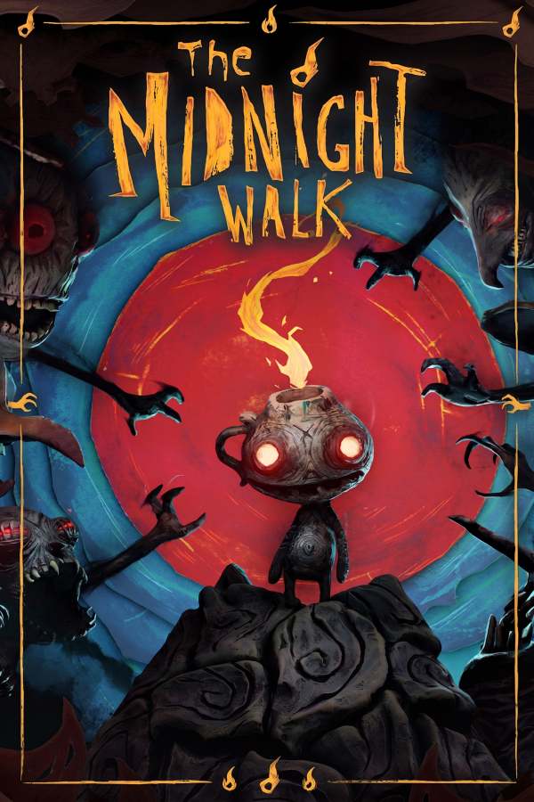

The Midnight Walk
Every archived year-end list appearance, including placement and points earned.
About the Game
Embark upon The Midnight Walk in this reverent dark fantasy adventure built in clay, from the minds behind Lost in Random and Fe. Become The Burnt One, befriend a lost lantern creature named Potboy, and use his flame to light your way through a conflicting world of wonder and suspense. Survive and outsmart the many monsters eager to devour your little friend’s flame as you experience five tales of fire and darkness, featuring an incredible cast of odd characters. Marvel at every disturbing detail in a landscape painstakingly handcrafted with real life clay and animated in a stop motion style. Fully playable in both flatscreen and with a VR headset.AN UNFORGETTABLE JOURNEY OF LIGHT AND DARKJourney with Potboy along the twisted trail of The Midnight Walk. Work with your companion to outsmart monsters, using his flame to distract while you hide from and evade the many threats of The Dark Itself. Encounter new friends and experience awe-inspiring sights as you navigate a path fraught with both peril and affirmation.A GRIM AND BEAUTIFUL HANDCRAFTED WORLDEverything you see in The Midnight Walk, from the drooling snarl of monsters to the bristling tree tops that line the journey was first sculpted in clay and then 3D scanned to a meticulous level of detail. The result is a uniquely layered fantasy world with an artistic imprint, all realized in breathtaking stop motion. Grab a gamepad and jump into the unknown, or step into the endless night in VR.
| Released | 2025-05-07 |
|---|---|
| Developer | MoonHood |
| Publisher | Fast Travel Games |
| Genres | Adventure, Indie |
| Platforms | PlayStation 5, PC |
SingleplayerSteam AchievementsFull controller supportAtmosphericStory RichFirst-PersonHorrorFantasyExplorationStealthAction-AdventureController
Where to Buy
Game information provided by RAWG.
Points by Year
List History
| Year | Source | List | Placement | Points |
|---|---|---|---|---|
| 2025 | Inverse | The 25 Best Games Of 2025, Ranked | 16 | 3 |
| 2025 | NPR | The best games of 2025, picked by NPR's staff | Unranked | 1 |
| 2025 | Virgin Media O2 | The Best Video Games Of 2025 Revealed | Unranked | 3 |